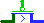
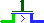

| Библиотека: | Проводка |
| Введён в: | 2.7.0 |
| Внешний вид: |   |
Транзистор имеет два входа, называемые затвор и исток, и выход, называемый сток. На схемах вход исток и выход сток изображаются соединёнными пластиной; Logisim отрисовывает стрелку, указывающую направление потока от входа к выходу. Вход затвор изображён соединённым с пластиной, параллельной пластине, соединяющей исток со стоком. Logisim поддерживает два типа транзисторов с немного различными поведениями, описанными ниже; транзистор p-типа обозначен кружком, соединяющим вход затвор с его пластиной, а транзистор n-типа не имеет такого кружка.
В зависимости от значения, поступающего на затвор, значение с истока может быть передано на сток; или соединения с истоком может не быть, тогда значение на стоке остаётся плавающим. Решение о передаче или разъединении зависит от типа транзистора: транзистор p-типа (обозначенный кружком на линии затвора) передаёт значение, когда на затворе 0, а транзистор n-типа (без кружка) передаёт значение, когда на затворе 1. Это поведение обобщено следующими таблицами.
|
| |||||||||||||||||||||||||||||||||||||||||||||||||||||||||||||||||||||||||||||||||
Или в краткой форме:
|
| |||||||||||||||||||||||||
* Если на истоке Z, то на стоке Z; в противном случае на стоке X.
Если значение атрибута Биты данных больше единицы, то вход затвор остаётся однобитным, но значение на нём применяется одновременно к каждому биту входа исток.
Транзистор n-типа ведёт себя очень похоже на Управляемый буфер. Основная разница в том, что транзистор предназначен для проектирования более элементарных схем.
Когда компонент выбран, или уже добавлен, комбинации от Alt-0 до Alt-9 меняют его атрибут Биты данных
, а клавиши со стрелками меняют его атрибут Направление
.
Нет.
Нет.